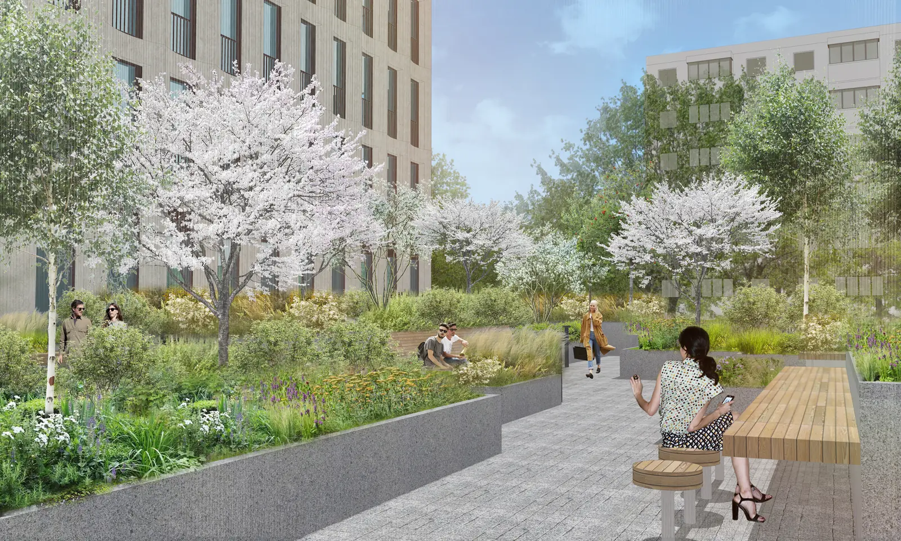
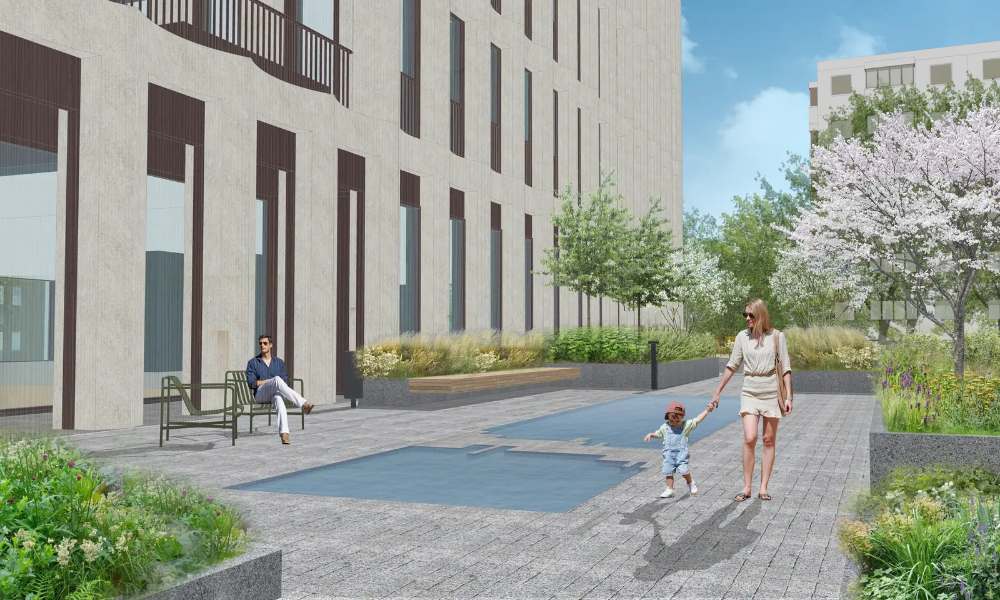
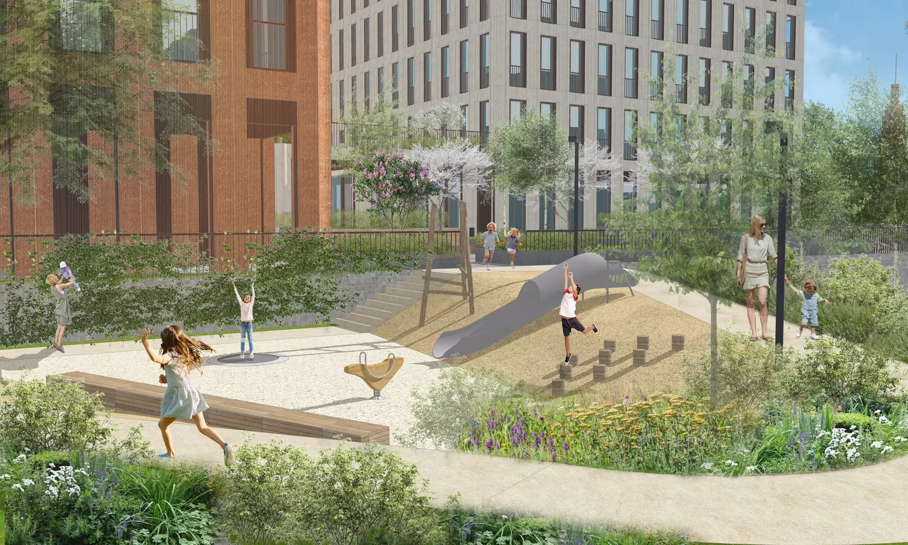
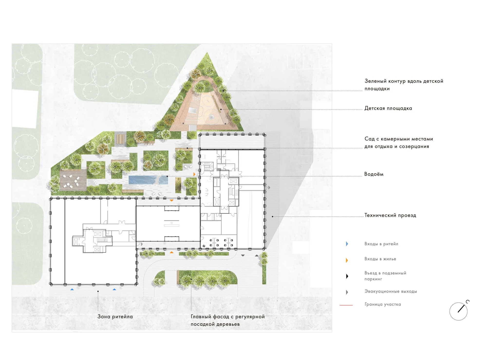
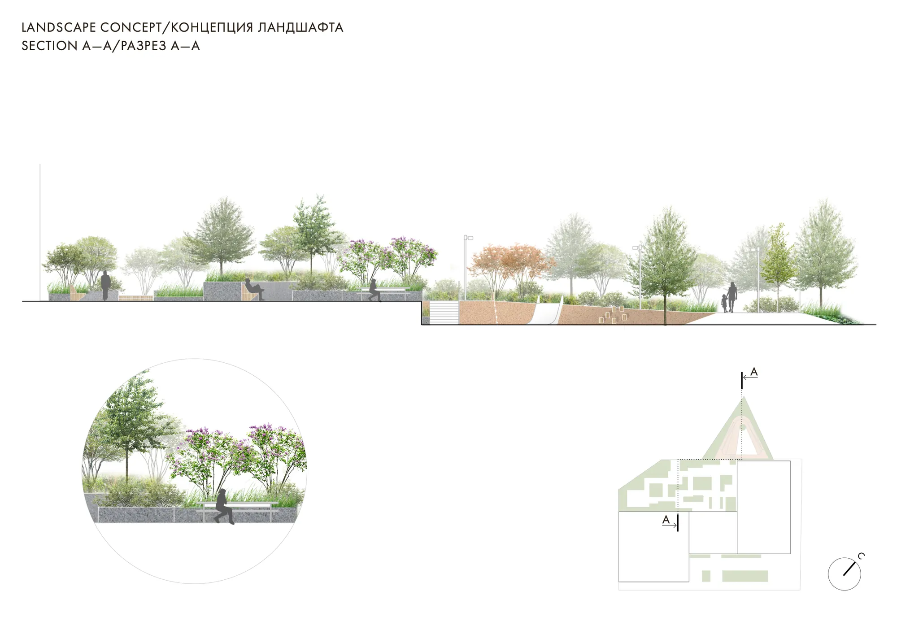

погодинская
Регулярность, камерные пространства, разнообразные места для сидения, природный ландшафт и натуральные покрытия — пять принципов сада жилого дома на Погодинской: двора, главного фасада и зелёных террас на 2 и 11 этажах.
По схеме инсоляции двор разделён на тенистый, стародачный и солнечный сады, а детская площадка на склоне получает солнце в дневные часы.
На крыше — сообщества степных сибирских растений: они выдерживают до −50 °C и не вымерзают в условиях сада на крыше.


чертежи и схемы

